<!DOCTYPE html>
<html>
<head>
  <!-- Global site tag (gtag.js) - Google Analytics -->
<script async src="https://www.googletagmanager.com/gtag/js?id=UA-145383186-1"></script>
<script>
  window.dataLayer = window.dataLayer || [];
  function gtag(){dataLayer.push(arguments);}
  gtag('js', new Date());

  gtag('config', 'UA-145383186-1');
</script>


        <title>FREEDOM FROM FEAR</title>
        <link href="https://fonts.googleapis.com/css?family=Muli&display=swap" rel="stylesheet">
        <link href="https://fonts.googleapis.com/css?family=Russo+One&display=swap" rel="stylesheet">
        <link href="css/style.css" rel="stylesheet" type="text/css">
        <link rel="stylesheet" href="css/footer-distributed-with-search.css">
        <link rel="stylesheet" href="https://cdnjs.cloudflare.com/ajax/libs/font-awesome/4.7.0/css/font-awesome.min.css">
        <link href="https://fonts.googleapis.com/css?family=Bungee+Outline&display=swap" rel="stylesheet">
        <link href="https://fonts.googleapis.com/css?family=Bungee+Outline|Fredoka+One&display=swap" rel="stylesheet">
        <link href="https://fonts.googleapis.com/css?family=Alegreya+Sans+SC:400,700&display=swap" rel="stylesheet">
    </head>
    </html>

    <body class="freedom_page">


            <section class="left_fff_pages">
                <div class="logo">
                    <a href="index.html">
                          
                          </a>
                          </div>


                            <div class="rectangle">
          <div class="icon-bar">
           <a class="active" href="#"><i class="#"></i></a>
            <a class="active" href="#"><i class="#"></i></a>
            <a class="active" href="https://www.linkedin.com/in/nataliia-dykun-4aa659153/"><i class="fa fa-linkedin"></i></a> 
            <a class="active" href="www.instagram.com/natahappywoman/"><i class="fa fa-instagram"></i></a> 
            <a class="active" href="https://www.behance.net/for_you"><i class="fa fa-behance"></i></a> 
            <a class="active" href="#"><i class="fa fa-envelope"></i></a>
                                
            </div>
            <div class="text">
                  <a href="index.html">ABOUT ME</a>
                        </div>
                        <div class="text1">
                            <a href="my_works.html">MY WORKS</a></div>
              <div class="text2">CONTACTS</div>
                                  
                      <div class="rectangle2">
                          <div class="hamburgermenu">
                          <div class="hamburger"></div>
                          <div class="hamburger"></div>
                          <div class="hamburger"></div>
                          </div>
                      </div>
                  </div>
                </section>


    
        <p class="fff">FREEDOM FROM FEAR</p>
        <p class="fff2">Non-profit website redesign study</p>

<div class="lining"></div>
<div class="lining2"></div>
        <div class="work_fff">
                <!--<div class="picture">

                        
                </div>-->

                <p id="overview"><strong>OVERVIEW:</strong><br> <br>Freedom From Fear (FFF)is a non-profit organization that helps people experiencing emotional disorders to get well and return to normal lifestyle by means of consultations, behavioral treatment, group meetings and online support.</p>

<p id="problem_top">
                  <strong>PROBLEM: </strong><br> <br>Adults, children and adolescents are faced with obstacles throughout their developmental years. These bumps along the way may result in strong feelings, emotions, and behaviors that affect their lives and their loved ones around them.
                                                                                </p> 
        
              </div>

<div class="parallax"></div>

<div class="research_item">

  <h1 id="research">RESEARCH</h1>
<p class="res">We have researched the problem through surveys, interviews, direct contact with the owner of the organization and web resources overview.</p>

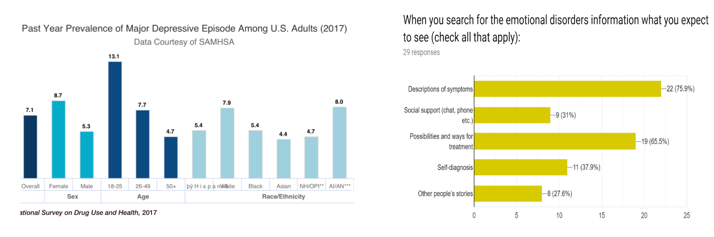

</div>

<!-- <div class="quote">
<p class="quoteme">“…one of my best friends has it and he is always depressed. In order to escape the reality he drinks, uses drugs or sleeps a lot… I think a therapist would help him.”
     <br>
     <br>
  Nicole B.</p>
</div> -->

<div class="parallax1"></div>
<div class="competitor">

  <h1 id="analysis_title">COMPETITOR ANALYSIS</h1>
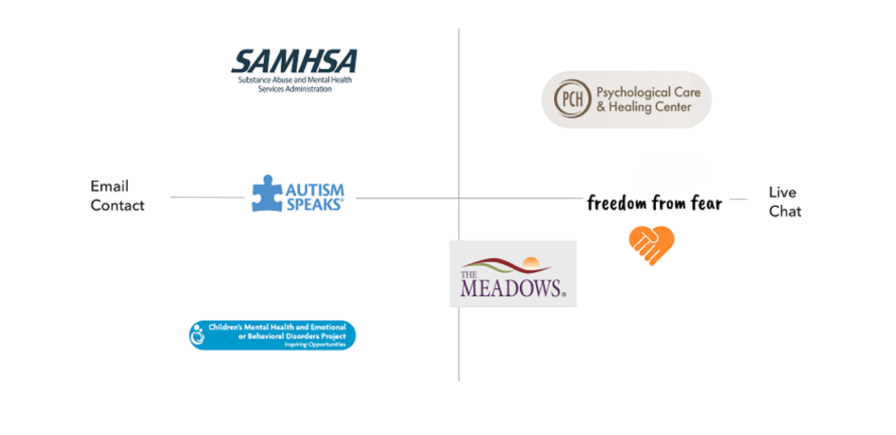

</div>

<div class="parallax2"></div>
<!-- <div class="problem">

    <h1 id="statement_title">PROBLEM STATEMENT</h1>
<p id="prob">Children, teenagers and adults suffer from mood swings and emotional instability due to different reasons (social, personal, environmental, etc.) nowadays. It can cause a deep depression or other emotional disorders if not treated on time. People that experience such conditions need help from the professional organizations and more information in order to go back to normal life and work on their behavioral and mental correction strategies.
</p>
</div> -->

<div class="userpersona1">

    <h1 id="persona_title">USER PERSONAS</h1>

 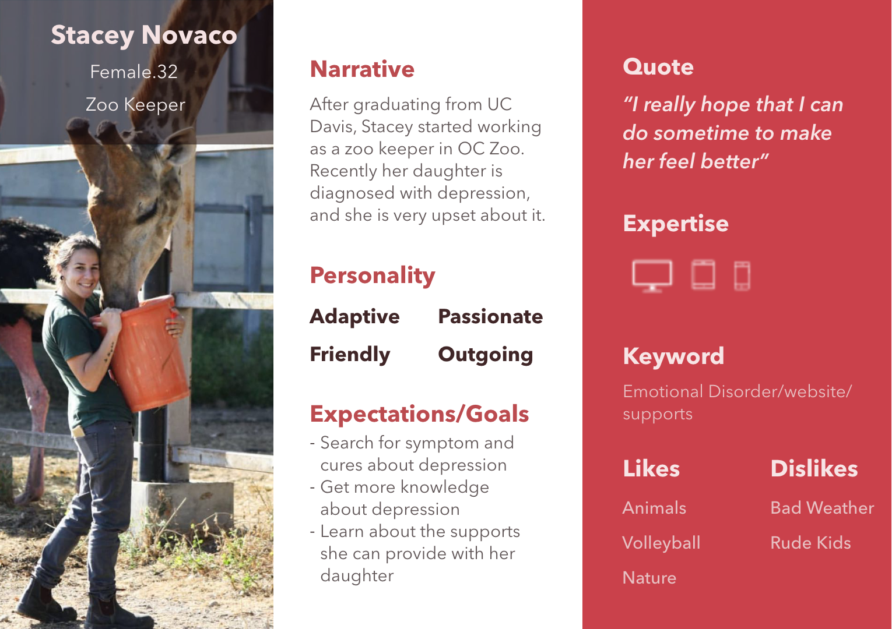

<p class="tellimage1">First User Persona is a relative or a friend of a person who experiences the symptoms of depression or anxiety.</p>

</div>

<div class="userpersona2">

    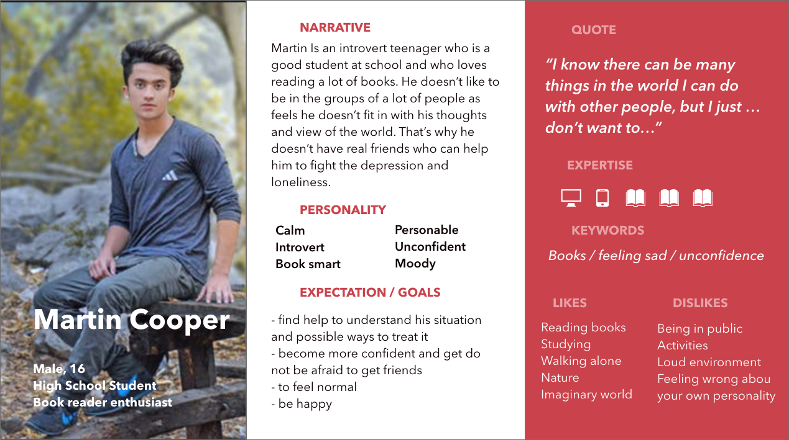
    <p class="tellimage2">Second User Persona is a person who feels depression or anxiety and is looking for a help from the professionals.</p>
</div>

<div class="parallax3"></div>

<div class="storyboard">

    <h1 id="story_title">STORYBOARD</h1>

    <p id="tellstory">The storyboard imitates the possible user flow using FFF website in case of need.

        Our user is a person who is in need of help.</p>
    

</div>

<div class="infoarch">

    <h1 id="ia_title">INFORMATION ARCHITECTURE</h1>
    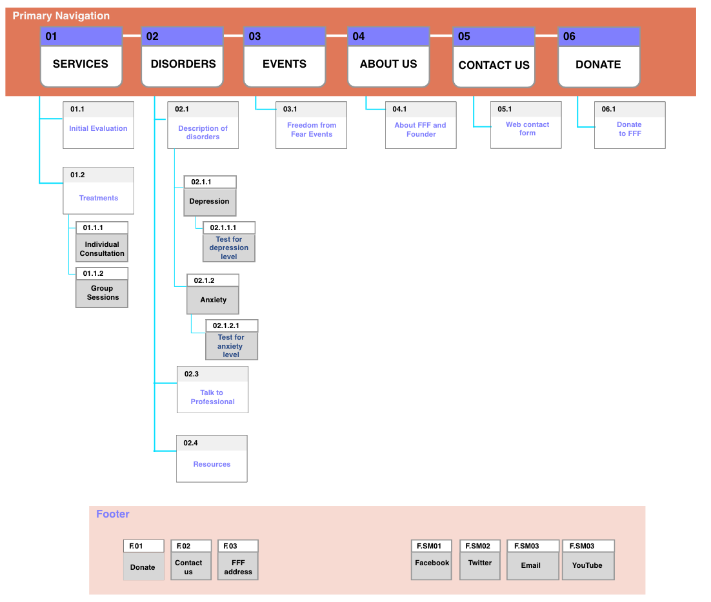
    <p id="tell_ia">The storyboard imitates the possible user flow using FFF website in case of need.

        Our user is a person who is in need of help for themselves or their close people.</p>
</div>

<div class="parallax5"></div>

<div class="lowfi">
    <h1 id="lowfi_title">LOW-FI PROTOTYPES AND USER TESTS</h1>
    <p id="usertest">User tests conclusions:<br> <br>

        - Pages that are menu categories should be redesigned to have grouped sections as accordion menu, for example, not to overwhelm page with too much text. <br>
        - Think about the the way how the main “calls to action” can be displayed on the homepage.<br>
        - Picture + text style guide to present the content in the best way for the targeted audience. <br>
        - Clear icons and section headings to make the website easy to use and navigate.<br>
       </p>
    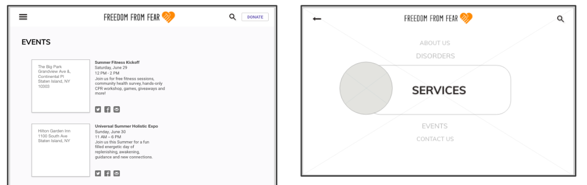
</div>

<div class="parallax6"></div>

<div class="styleguide">
    <h1 id="styleguide_title">STYLE GUIDE</h1>
    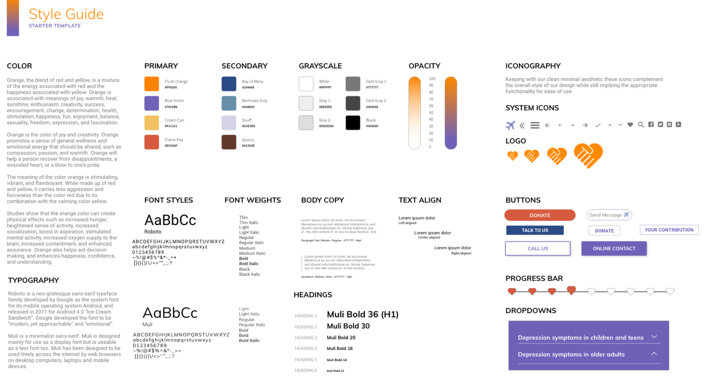
</div>


<div class="prototype">
    <h1 id="prototype_title">PROTOTYPE ITERATIONS</h1>
    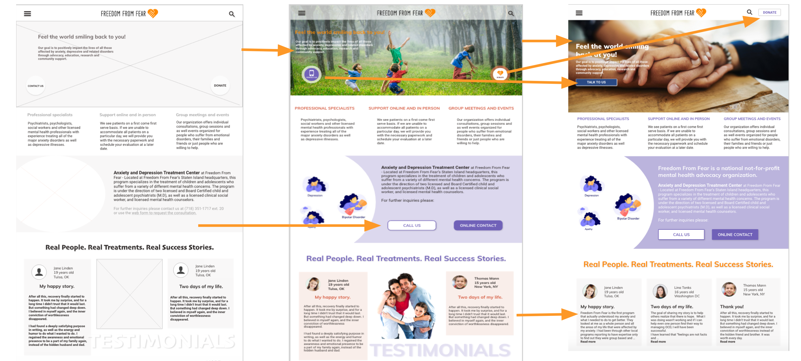

    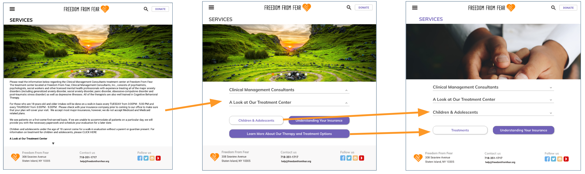

</div>

<!-- <div class="prototype">

    <h1 id="prototype_title">RESPONSIVE PROTOTYPE</h1>
    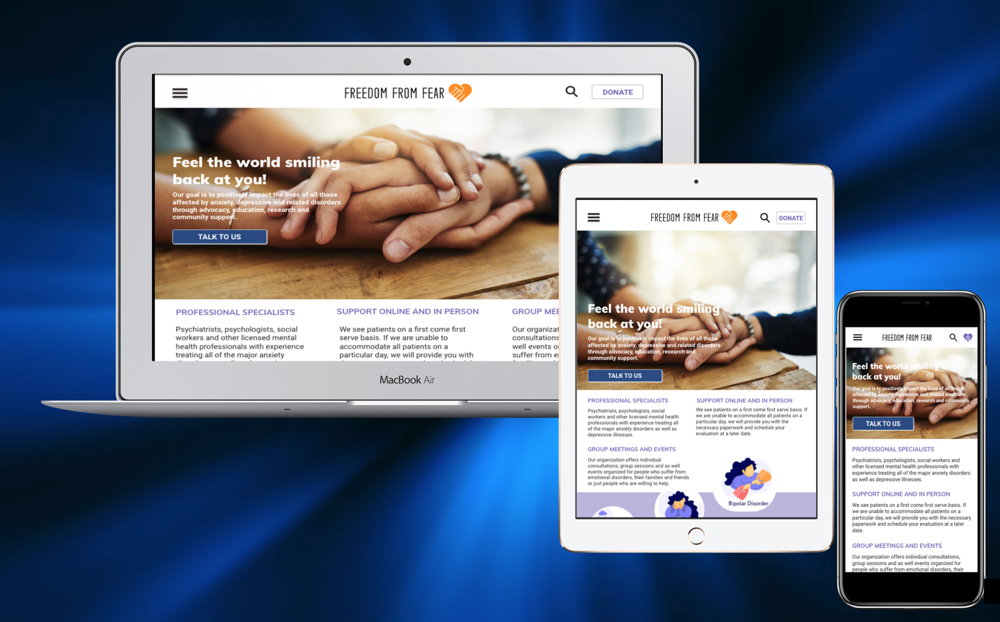
</div> -->

<div class="parallax7"></div>

<div class="links">

    <h1 id="prototype_title">LINKS TO PROTOTYPES</h1>

   <!--<a href="#aboutme">ABOUT ME</a>-->

    <p id="desk_link"><a href="https://xd.adobe.com/view/cd8803cf-2d44-467c-6619-6afa7c56e882-bbb9/">LINK TO DESKTOP PROTOTYPE</a></p>

    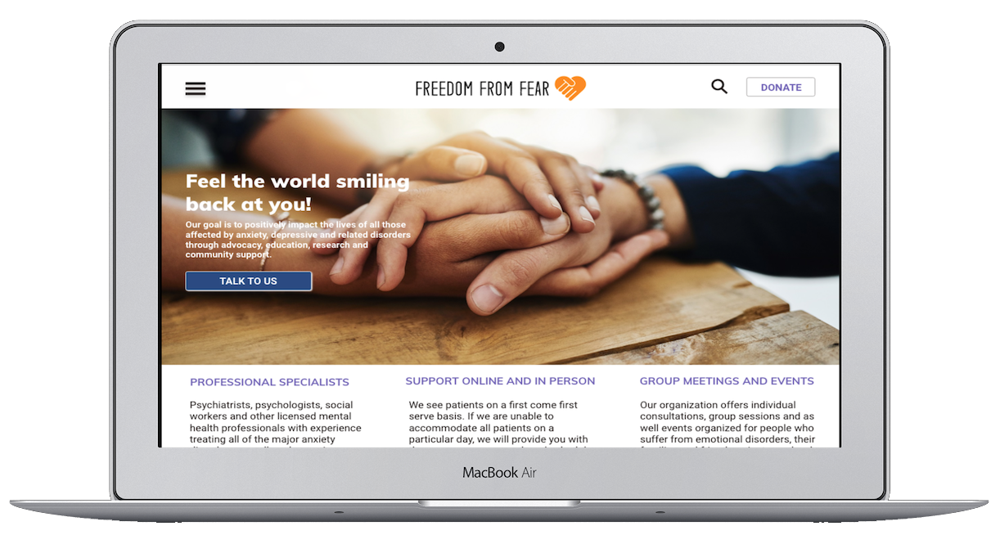

    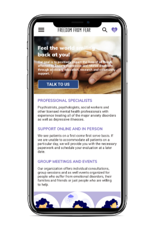

    <p id="mob_link"><a href="https://xd.adobe.com/view/b1f615ab-9e89-48a4-7716-35785ba2092b-c7c7/?fullscreen">LINK TO MOBILE PROTOTYPE</a></p>

</div>

<div class="nextsteps">

    <h1 id="steps_title">NEXT STEPS</h1>
    <p id="next">
        1. More testing of the current prototypes with the potential users to understand if the design meets all their needs and requests.
<br>
<br>
        2. Adding the option of the personal account that would help communication between a customer and a therapist, will contain all the personal data, results of the psychological tests and needed information for the specific treatment.
 <br> 
 <br>      
        3. Improving user’s experience by adding the service of “Request a callback” and other options for easier and faster communication among people who need help and Freedom from Fear therapists.
 <br>       
      </p>
</div>

<div class="lining"></div>

<p id="thanks">THANK YOU!</p>

<section>
    <footer class="footer-distributed">

            <div class="footer-left">
      
              <p class="footer-links">
                <a href="#">Home</a>
                ·
                <a href="#">About</a>
                ·
                <a href="#">My works</a>
                ·
                <a href="#">Contact</a>
              </p>
              <div class="flower-5"></div>
              <p class="footer-company-name"> Nataliia Dykun &copy; 2019</p>
              
            </div>
            
            <div class="footer-right">
      
              <form method="get" action="#">
                <input placeholder="Search a website" name="search" />
                <i class="fa fa-search"></i>
              </form>

            </section>

              </footer>
            </body>  
            </div>